0.10109042919131067Model fitting and inference for infectious disease dynamics
Introduction
Introduction
SIR-type models
\[ \begin{aligned} \frac{dS}{dt} &= -\beta I \frac{S}{N}\\ \frac{dI}{dt} &= \beta I \frac{S}{N} - \gamma I\\ \frac{dR}{dt} &= \gamma I \end{aligned} \]
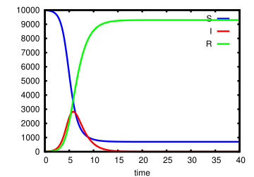
Mechanistic models: description vs mechanism.
Model fitting: parameter estimation
Given a model, what are the parameter combinations that best fit the data?
Why are we doing this?
- Learn something about the system
- test a scientific hypothesis — e.g. why did the UK H1N1 epidemic wane in summer 2009?
- estimate parameters — e.g. what fraction of cholera infections in Bangladesh are asymptomatic?
- sometimes in real time
- Validate the model, especially for prediction
What do we mean by “best fit the data”?


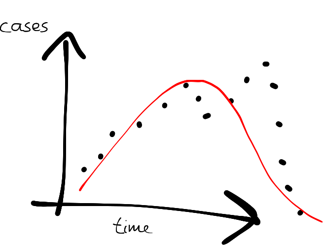
Model inference: state estimation
Given what we observe, what is the state of the system?

Linking models to data

Assessing the “closeness” of model output and data

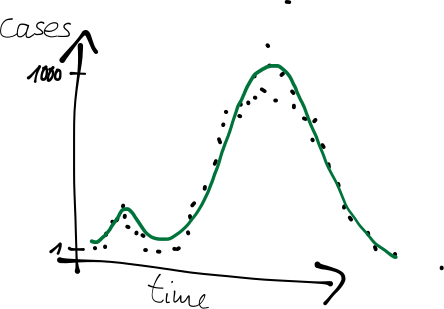
Probabilistic formulation
Often we know something about how the data were taken, so observations introduce uncertainty.
We can express the uncertainty in observing the process as a probability
\[p(\text{data} \mid \text{underlying process})\]
Including this in our model gives
\[p(\text{data} \mid \text{model output})\]
Two things you can do with a distribution
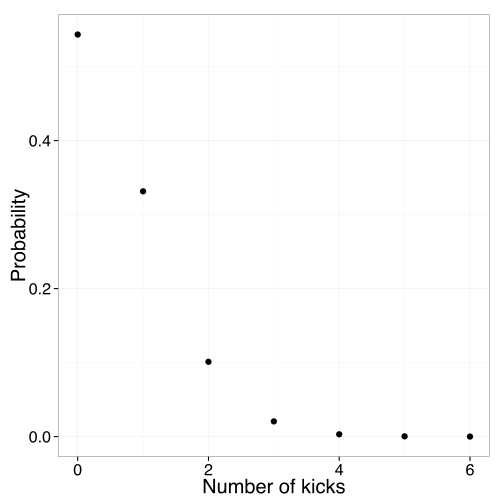
Discrete, e.g. Poisson: how many die of horse kicks at 0.61 kicks per year?
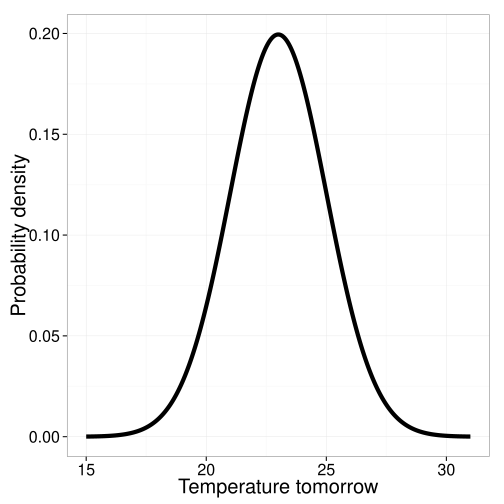
Continuous, e.g. normal: the temperature in London tomorrow.
Example: observation uncertainty
SIR model, assuming cases are detected with independent reporting probability \(\rho = 0.5\).
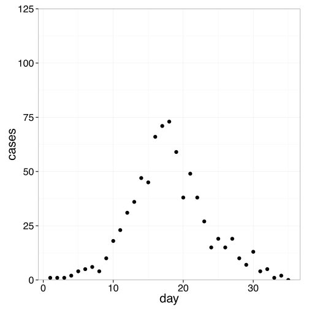

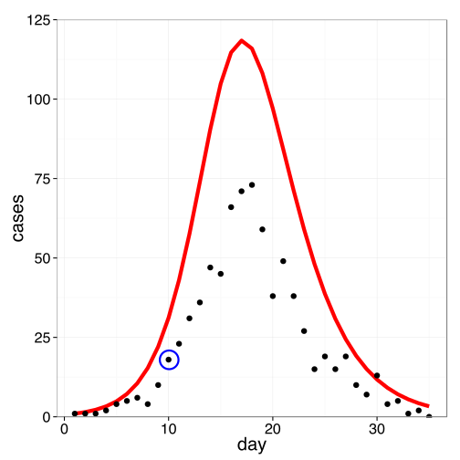

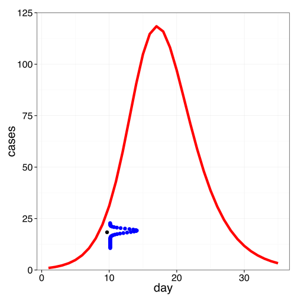
At time 10, 18 cases observed.
In the model, 31.1 cases.

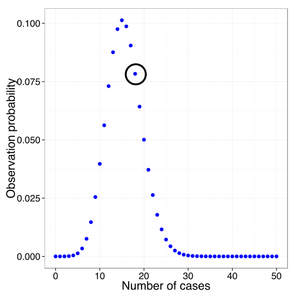
\(p(\text{data point } 10 \mid \theta) = 0.078\)
From one point to the whole trajectory
Multiply across the data to get the probability of the whole trajectory:
\[p(\text{data} \mid \theta) = \prod_{i} p(\text{data point } i \mid \theta)\]
Or sum on the log scale, which is numerically better behaved:
\[\log p(\text{data} \mid \theta) = \sum_{i} \log p(\text{data point } i \mid \theta)\]

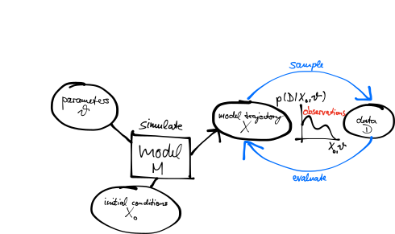
The likelihood
We compare models to data using probabilities:
\[p(\text{data} \mid \text{model output})\]
For a given model this depends on the parameters \(\theta\):
\[L(\theta) = p(\text{data} \mid \theta)\]
is called the likelihood of parameters \(\theta\). Here \(\theta\) encompasses all parameters, e.g. \(\theta = \{\beta, \gamma\}\).
Likelihoods can span a wide range of orders of magnitude, which causes numerical problems. Taking the logarithm gives the log-likelihood.
Bayesian inference
Bayes’ rule
In Bayesian inference we need \(p(\theta \mid \text{data})\). Applying the rule of conditional probabilities:
\[p(\theta \mid \text{data}) = \frac{p(\text{data} \mid \theta)\, p(\theta)}{p(\text{data})}\]
- \(p(\theta \mid \text{data})\) is the posterior
- \(p(\text{data} \mid \theta)\) is the likelihood
- \(p(\theta)\) is the prior
- \(p(\text{data})\) is a normalisation constant
In words,
\[\text{(posterior)} \propto \text{(normalised likelihood)} \times \text{(prior)}\]
Prior probabilities
\(p(\theta)\) quantifies our degree of belief via a probability distribution, before confronting the model with data — from previous measurements, the literature, experts and so on.
Example: \(R_0\) of measles

Example: estimating \(R_0\) of measles
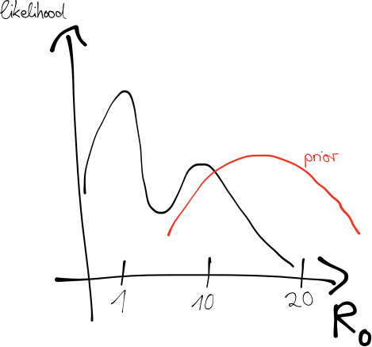
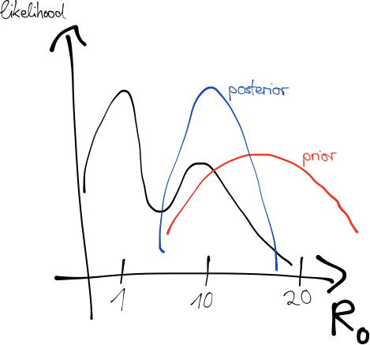
Checking a prior by simulating from it
A prior on \(R_0\) is hard to have intuition about. An epidemic curve is not.
So draw parameters from the prior, run the model, and look at what you get. This is a prior predictive simulation, and it turns an abstract claim into a picture you can judge.
If your prior produces epidemics that infect the whole population in four days, you have learned something you could not have seen from the parameter range.
Sampling from the posterior
Parameters \(\theta\) are interpreted as a random variable, distributed according to the posterior:
\[p(\theta \mid \text{data}) \propto p(\text{data} \mid \theta)\, p(\theta)\]
We want to generate samples of \(\theta\) from this distribution.
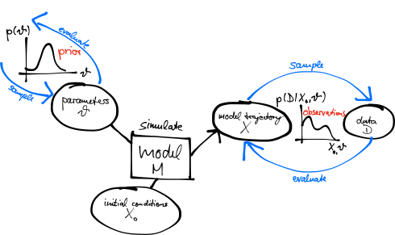

Why we cannot just try everything
You can explore a two-parameter posterior on a grid. Fifteen values each is 225 model runs, which is nothing.
| Parameters | Grid points at 15 each |
|---|---|
| 2 | 225 |
| 4 | 50,625 |
| 6 | 11,390,625 |
| 10 | 576,650,390,625 |
Real models have six parameters, or sixty. Grid search is a way of seeing a posterior, never a way of fitting one — which is what the next session is about.
Practical session
The same arrows, in Julia
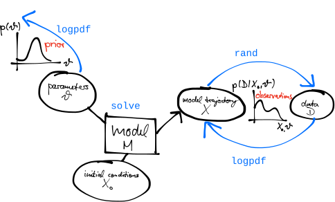
Your Turn
- Simulate an SIR model and explore what the priors imply
- Evaluate a Poisson likelihood against observed data
- Combine them into a posterior, and explore it by grid search
Appendix: held in reserve
Note
The slides that follow are held in reserve. Skip them if the room is comfortable with probability notation, or come back to them if questions come up during the practical.
Frequentist vs Bayesian inference
Frequentist inference
- There are true parameters in the world; the uncertainty comes from the data
- Encoded in the likelihood: \(L(\theta) = p(\text{data} \mid \theta)\)
- Inference tries to estimate these parameters
- Probabilities express outcomes of repeated experiments
Bayesian inference
- There are no true parameters; the data are true, and uncertainty is in the parameters and hypotheses
- Encoded in the posterior: \(p(\theta \mid \text{data})\)
- Probabilities express belief in a given parameter value
- The posterior is the probability distribution of a random variable \(\theta\)
Model inference: model selection
Given a set of potential models, how do we decide which is the right one?
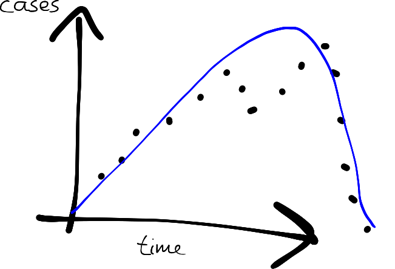
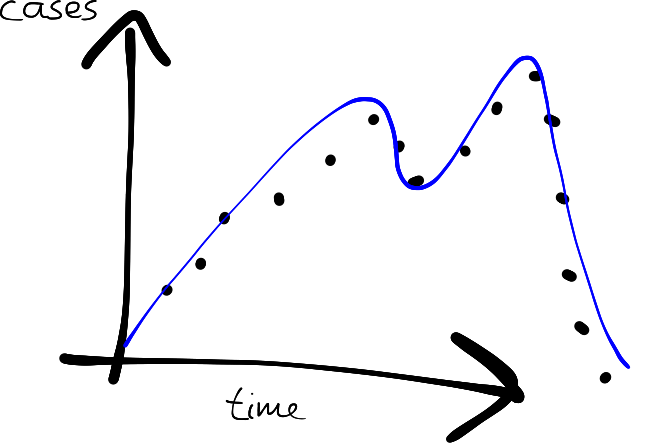
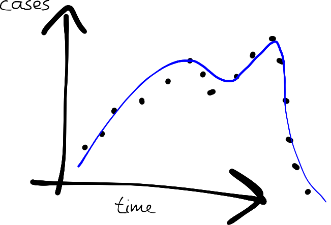
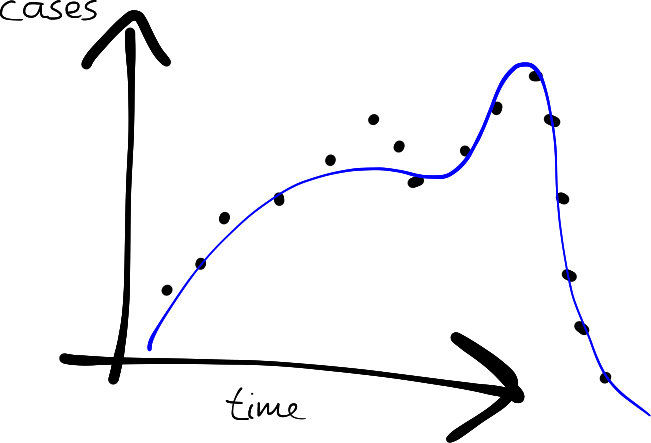
Probabilities
If \(A\) is a random variable, we write \(p(A = a)\) for the probability that \(A\) takes value \(a\). We often shorten this to \(p(a)\).
Example: the probability that Novak Djokovic wins Wimbledon, \(p(\mathrm{W} = \mathrm{Djokovic}) = p(\mathrm{Djokovic})\)
Normalisation: \(\sum_{a} p(a) = 1\)
Joint and marginal probabilities
For two random variables we write \(p(A = a, B = b) = p(a, b)\) for the joint probability that \(A\) takes value \(a\) and \(B\) takes value \(b\).
Example: the probability that Djokovic wins Wimbledon and it is sunny on the final day.
We obtain a marginal probability from joint probabilities by summing:
\[p(a) = \sum_{b} p(a, b)\]
Conditional probabilities
The conditional probability of outcome \(a\) given that \(B\) took value \(b\) is written \(p(a \mid b)\).
Conditional probabilities relate to joint probabilities as
\[p(a \mid b) = \frac{p(a, b)}{p(b)}\]
These combine in the chain rule:
\[p(a, b, c) = p(a \mid b, c)\, p(b \mid c)\, p(c)\]
Continuous distributions
For continuous variables, sums become integrals:
- Normalisation: \(\int p(a)\, da = 1\)
- Marginals: \(p(a) = \int p(a, b)\, db\)
The two directions are unchanged: pdf(Normal(23, 2), 30) evaluates a density, rand(Normal(23, 2)) draws a sample.
Introduction